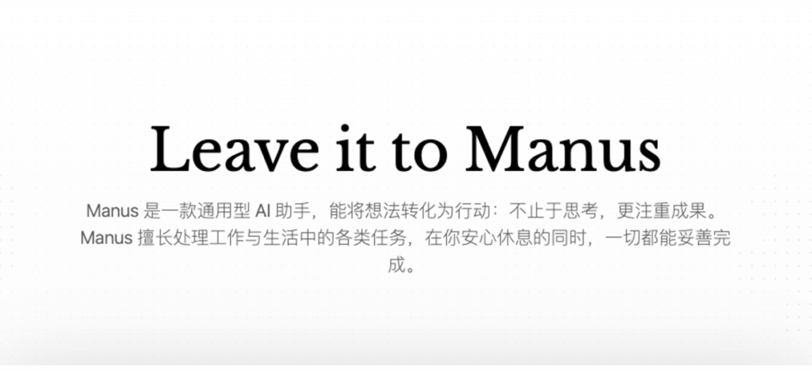
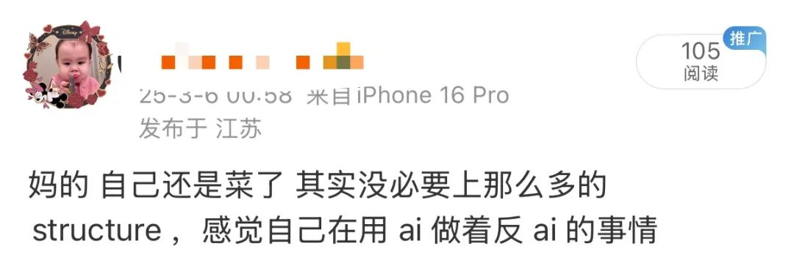
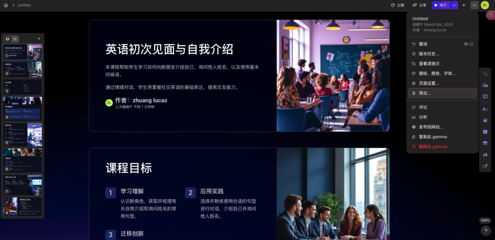
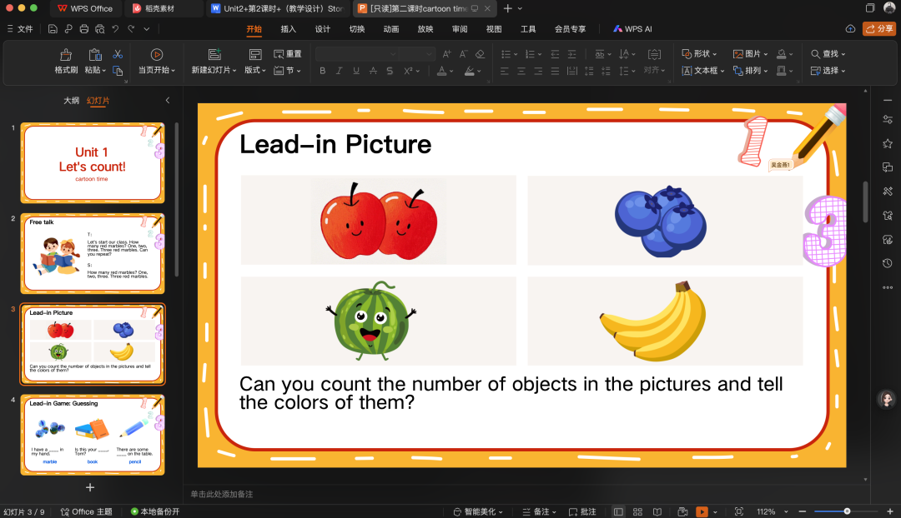
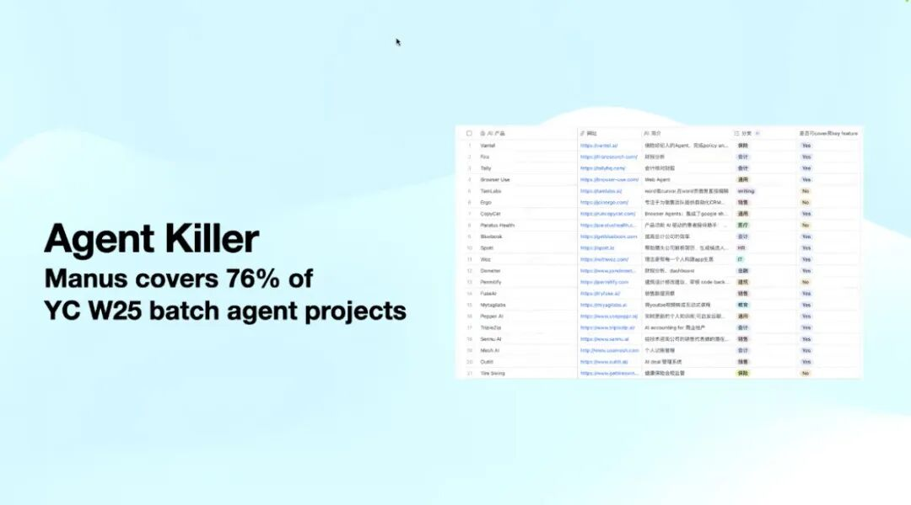

Manus 给 Agent 产品设计带来的启示：Less StructureLessons from Manus for Agent Product Design: Less Structure

前晚，一个名为 Manus 的 AI agent 产品 Demo 视频悄然刷屏 AI 媒体圈。
在看完视频后，不得不深夜发博批判自己"过度依赖人工设计"，工程思维的固化 & 对模型能力边界的反应迟钝是罪过。这段时间项目上有个困扰我蛮久的问题，Manus 简单的一个 demo 视频就让我茅塞顿开，找到了解法。
次日醒来发现 Manus 已然点爆了国内圈子，一码难求到某鱼上甚至有人花 5 万求一个邀请码——这个让大模型拥有"整台电脑"的通用 Agent，颠覆了人们对'套壳'的认知。
当然一个爆火的产品少不了媒体的吹嘘也少不了没拿到邀请码者的'吃不到葡萄说葡萄酸'。
其实从我的角度来说，Manus 是不是第一个通用 Agent 及其能力如何不是很重要，Manus 团队的 Agent 设计理念 'Less Structure More Intelligence' 反而对我很有启发。
01 · Manus 做了什么
Manus 名字取自于拉丁语 'Mens et Manus'（即'知行合一'，麻省理工的校训）
与市面上需要人工编排 Workflow 的 Coze、Dify 等产品不同，Manus 的核心在于：
- 给模型一台'虚拟机'：将 Computer Use 与 Tool Use 深度融合，让模型能独立于人类去工作，不跟人抢电脑；
- 自主任务规划：模型根据目标自动拆解、规划 Todo 并执行，而非靠人为搭建 Workflow；
- 全流程无人值守：从'生成 PPT 大纲'到'输出完整 .pptx 文件'，无需人类中途干预；
相当于给 AI 配置了完整的工作台，让它像真人一样操作电脑完成任务，不仅有普通大学生的水平还能任劳任怨地干脏活。
02 · 为什么说改变了人们对'套壳'的认知
除开 Computer Use、MCP、自主规划...这些早已有的概念，有个问题在看到 Demo 视频的当晚我思考了一晚上：
为什么要给模型一台 PC？这跟我直接通过 Function Call 在输出结果上会有什么区别吗？
直到 Manus 放出邀请码，实测了几个 Case 后才有了答案：
首先最大的区别在于，Manus 通过操作浏览器+视觉获取到了更多 API 未能提供的信息，搜索的广度、深度都要多出了不少，在 Deep Research 的工作上不输于普通校招生、实习生。

众所周知，小红书中拥有着大量优质笔记内容，日均搜索量达约 6 亿次，近三分之一用户打开小红书的第一件事就是搜索。可惜并没有一个开放的搜索接口让模型能直接获取其中的优质内容。
而模型有了 PC 后，社区便真正没有了围墙。
其次，可以看见的是模型对工具的使用产生了质变，完成了从"顾问"到"高级牛马"的角色进化。
Manus 把 PC 交给模型，经过其自主地搜集信息、学习，能设计出更符合目标场景的 PPT，并把 .pptx 文件直接交到你手上。
当模型真正开始'使用'而不仅是'调用'工具时，人们确实瞥见了一丝通用 Agent 的光。


故 Manus 能爆火、能被媒体吹捧是因为它确实让人们看见了其中一种 Agent 新范式，也改变了人们对产品层'套壳'所能产生的化学反应的认知。不只是因为邀请码。
诚然，同劝冷静者所说一般，Manus 只是把 Claude、Computer Use、MCP、自主规划等等这些早已在各种 Agent 概念产品实现过的功能进行了一番套壳缝合，没什么技术突破。
但这产品应用上的实现落地，硬要扯到技术上就是对牛弹琴。有的是公司能开发出第二个'抖音'，但没见有公司能做出第二个'抖音'。
套壳不捞，捞的是套不好壳、有壳不套。
大家总是会从一个极端走向另一个极端。我们的态度是不要过于捧杀或 diss，甚至还出来了很多阴谋论...过犹不及。能够以足够的包容和理性去看待 Manus，去对待华人创业团队。
——《一些关于 Manus 的独家信息和慢思考》特工宇宙

回归开头主题，个人真真实实地从 Manus 的理念上得到了启发：Less structure，more intelligence ——尽可能地去屏蔽人类的认知框架对模型的限制，多探索模型的能力边界，智能涌现。
受限于对模型能力边界的认知局限，以往在项目中为了满足复杂的 Case，我设计了不计其数的 Prompt、Workflow，最终过多地依赖设计框架来约束模型产出的结果就是'人工智能、人工智能，人工多于智能'。
在一些场景下给到足够工具后，放手让模型自由创造或许会得到更好的结果。
03 · 上头后的冷水
实话实说，Manus 虽然给 Agent 设计上带来了新的范式，但离真正的通用还有些距离。看了那么多实测 case 后，卡死率还是蛮高的，有这么几个问题：
- 效率：简单的 case 也要耗时 2-4 小时，例如电商商品比价，有杀鸡用牛刀的感觉；
- 资源：每个任务需独立 Docker 容器，服务器压力巨大；
- 视觉：模型对 UI 的理解能力显然还不够，大多数任务卡死都是因为界面理解问题；
- 细分领域：在强依赖细分领域内数据的场景上，即使通过浏览器也无法搜集到有用信息。
04 · 对 Agent 赛道两级分化的思考
我们能看见 Agent 创业的两条路径：
- 通用派：追求 'Less Structure, More Intelligent' 的通用智能；
- 垂直派：深耕细分领域，用专业知识与不开源的业内数据来构筑护城河。
作为身处细分赛道的 Agent 设计者，个人并不认同通用派已杀死细分派 Agent 的说法。 Killer PPT](images/manus/img7.png)
跪拜 Coding 领域有 GitHub 这么一个强大的开源社区，使得 Devin、MetaGPT 成为最先成熟落地且商业化的 Agent。但在金融、医药等其他领域，多的是藏冰山角下的私有数据，数据是最大的护城河。
当大模型尚未内化行业 Know-how 时，细分领域专家设计的 Structure 仍是刚需，业内私有数据训练的专家模型仍不可或缺——不过这扇窗口期可能比想象中更短。
在硅基与碳基的十字路口，人机协作的范式正在被不断改写。变革中没有永恒的赢家，只有持续进化者。感谢 Manus '弱框架，强智能'架构带来的启发，或许就是我当前项目的破局点。
感谢阅读，以上为一个练习时长两年半 AI 爱好者的一些浅层认知，欢迎指正，真诚地。